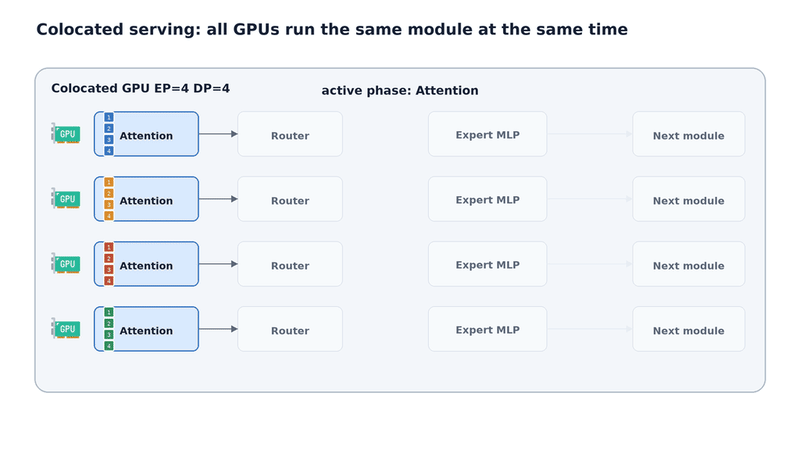
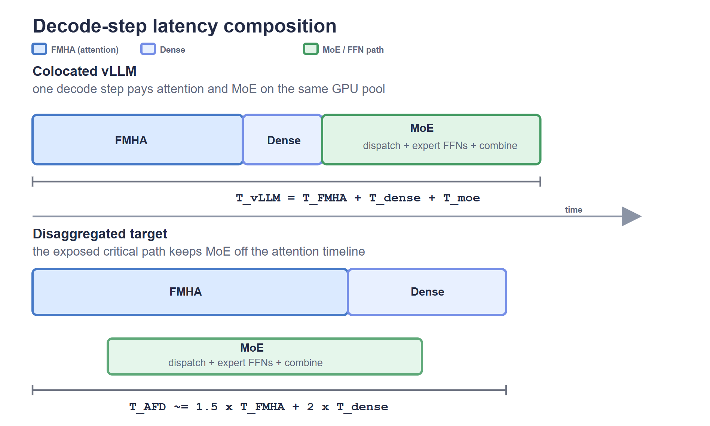

MoE解码交替执行Attention层（读KV-cache）和MoE层（路由token到expert）。长上下文撑满KV-cache → decode batch缩小 → 每expert的token不够，MoE利用率断崖式下跌。
根本矛盾：Attention和MoE跑在同一Worker上。KV-cache压小batch时，MoE先遭殃——attention的工作量和MoE可用的token池被同一道闸门卡住。
 Attention-FFN分离部署的token流：Attention Worker以请求并行方式运行，FFN/MoE Worker从所有Attention Worker聚合token形成大expert batch。
Attention-FFN分离部署的token流：Attention Worker以请求并行方式运行，FFN/MoE Worker从所有Attention Worker聚合token形成大expert batch。
 Figure 1. Decode阶段attention读取每个请求的KV-cache历史，MoE层按expert分组token后执行expert GEMM。
Figure 1. Decode阶段attention读取每个请求的KV-cache历史，MoE层按expert分组token后执行expert GEMM。

Figure 2. 共存MoE的decode流程。所有GPU在相同拓扑上依次执行attention、路由、dispatch、expert执行、combine。 Figure 3. 长上下文通过缩小KV-capped decode batch来饿死MoE层。在固定GPU和EP下，上下文长度L增长→active batch B缩小→每expert token减少→MoE MFU崩溃。
Figure 3. 长上下文通过缩小KV-capped decode batch来饿死MoE层。在固定GPU和EP下，上下文长度L增长→active batch B缩小→每expert token减少→MoE MFU崩溃。
EP减少per-GPU的expert权重流量，但不改变送入MoE的token数（已由attention admission固定）。放大EP后回报迅速递减。
共存部署想用一个batch同时满足两者，这正是矛盾的根源。
 Figure 4. EP在固定per-GPU工作量下减少expert权重流量，但收益很快到底。MoE FFN利用率仍然取决于每expert token数，dispatch/combine不会消失。
Figure 4. EP在固定per-GPU工作量下减少expert权重流量，但收益很快到底。MoE FFN利用率仍然取决于每expert token数，dispatch/combine不会消失。
AFD改变的是部署位置，不是模型计算。Attention Worker持KV-cache、路由、采样；FFN Worker专跑MoE，从多个Attention Worker聚合token。
聚合效应解开了共存布局的耦合：FFN侧不再受单个Attention Worker的KV受限batch限制，每expert看到的token变多，利用率超过共存基线。
 Figure 5. 聚合是AFD提供的利用率杠杆。固定FFN Worker池，聚合更多Attention Worker扩大每expert batch，将MoE利用率提升到共存基线之上。
Figure 5. 聚合是AFD提供的利用率杠杆。固定FFN Worker池，聚合更多Attention Worker扩大每expert batch，将MoE利用率提升到共存基线之上。
 Figure 6. Attention-FFN分离的token流。Attention Worker执行attention和路由，FFN Worker将路由token聚合为expert执行。
Figure 6. Attention-FFN分离的token流。Attention Worker执行attention和路由，FFN Worker将路由token聚合为expert执行。
分离后每层要跨角色dispatch/combine token。若边界串行，大expert batch收益会被通信全部吞掉。
理想流水线需三条件：Attention/MoE计算平衡、单次通信 < 流水线周期、microbatch足够多隐藏双向通信。FastAFD在GB200逐一验证。
 Figure 7. AFD microbatch ping-pong流水线。dispatch、expert执行、combine和attention计算在不同microbatch间重叠。
Figure 7. AFD microbatch ping-pong流水线。dispatch、expert执行、combine和attention计算在不同microbatch间重叠。
72块Blackwell GPU在一个NVLink域内互联，130 TB/s带宽让AFD的token跨角色移动在机内即可完成。
但Blackwell的FP8算力和HBM带宽也大幅增强了共存基线。AFD不能只靠分离取胜，必须把通信和调度开销全藏掉。
基于Mini-SGLang，Ray启动Attention/FFN Worker和Coordinator，每4-GPU节点托管4个Worker。
每项优化精准打击一种成本：① GPU侧dispatch/combine与计算重叠；② MegaMoE融dispatch+GEMM+combine为一kernel；③ 零开销调度提前生成下一步计划。
FastAFD把payload和control都留在GPU上，复用DeepEP kernel。代价是GPU-side通信消耗SM——下一节展示如何用融合kernel把成本转为重叠。
 Figure 8. Coordinator在Worker执行当前step时预生成下一步的metadata，通过ZMQ通信。GPU侧zero-overhead调度将CPU控制路径完全隐藏。
Figure 8. Coordinator在Worker执行当前step时预生成下一步的metadata，通过ZMQ通信。GPU侧zero-overhead调度将CPU控制路径完全隐藏。
传统MoE每层有routing、dispatch、GEMM、combine多个独立kernel，边界带来同步开销。MegaMoE将它们融合为一个kernel，Tensor Core算GEMM的同时NVLink搬token。
融合在Qwen3-235B上减少44%的8-node decode-step延迟，MiniMax-M2.5上为42%。
 Figure 9. Nsight Systems trace：Coordinator的decode step调度完全被GPU执行覆盖，不影响decode step周期长度。
Figure 9. Nsight Systems trace：Coordinator的decode step调度完全被GPU执行覆盖，不影响decode step周期长度。
Coordinator在Worker回放当前CUDA Graph时，提前用ZMQ发下一步metadata。控制指令不进decode关键路径，消除了集群级调度round-trip。
测Qwen3-235B和MiniMax-M2.5两个FP8 MoE，基线vLLM共存DP+EP。FastAFD每GPU吞吐：Qwen3提升1.41×（8K）/1.44×（16K），MiniMax提升1.45×（8K）/1.35×（16K）。

Figure 10. FastAFD对比vLLM共存基线的per-GPU decode吞吐。Qwen3-235B提升1.41×（8K）和1.44×（16K）；MiniMax-M2.5提升1.45×（8K）和1.35×（16K）。加速 = batch expansion（容量增益）× FFN-node tax × latency ratio。Attention GPU卸掉expert权重，KV-cache容量+1.5×（Qwen batch 64→96，MiniMax 48→72）。
FFN侧隐藏时，decode-step period等于attention侧周期。MiniMax（小激活）全程stay hidden，Qwen（大激活）越界后step延迟上升。FastAFD用有界闲置换取鲁棒性。
加速来自容量，而非延迟：decode步长与vLLM持平，变化的是每GPU承载量。
 Figure 11. Step分解与AFD延迟预测模型。FMHA、dense work和MoE三部分的时间构成vLLM基线step，AFD移除MoE部分。
Figure 11. Step分解与AFD延迟预测模型。FMHA、dense work和MoE三部分的时间构成vLLM基线step，AFD移除MoE部分。
 Figure 12. AFD加速在不同模型上趋势不同。MiniMax（小激活参数）在所有M:N比下保持FFN侧隐藏，延迟几乎持平；Qwen（大激活参数）越过最优比后step延迟上升。
Figure 12. AFD加速在不同模型上趋势不同。MiniMax（小激活参数）在所有M:N比下保持FFN侧隐藏，延迟几乎持平；Qwen（大激活参数）越过最优比后step延迟上升。
无MegaMoE融合 → FFN侧提早暴露，可行M更小；禁用零开销调度 → Qwen 4-node 8K step从32.8ms涨到42.6ms，吞吐损失23%。mb=2为最优（mb=1暴露通信，mb≥3只加开销）。
Rubin GPU管prefill/attention，LPX机架管FFN/MoE——正好是AFD分离的两种资源。
按GB200实测推算：仅MoE分离可达1.57–1.75×，dense层也分离则2×以上（待硬件验证）。
① 通信应该留在GPU上。 NVLink域内SM不稀缺，用16% SM切片换dispatch/combine与计算重叠，整个decode step锁进CUDA Graph。
② 平衡不是正确目标。 FFN闲置最多浪费1节点，FFN暴露则拖慢每步。FastAFD取Tₑ ≤ Tₐ的最大M点，用有界闲置换鲁棒性。
③ 两个microbatch就够了。 mb=2已隐藏双向通信，mb≥3只乘小kernel开销。
④ 加速来自容量，而非延迟。 Attention GPU卸掉90%+权重，per-GPU吞吐提升1.35–1.45×。
FastAFD是serving prototype，非新架构。下一步扩展到DeepSeek、Kimi、Qwen3-Next等更多MoE家族，并接PD分离、推测解码、准入控制等生产组件。源码将发布于hao-ai-lab/FastAFD。
参考：https://haoailab.com/blogs/fastafd/